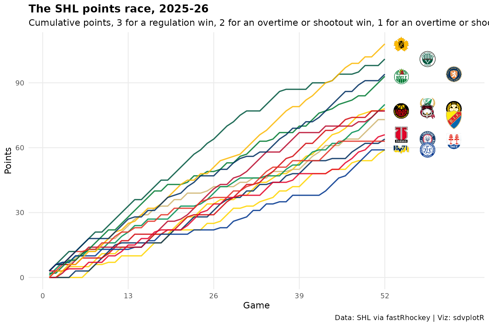
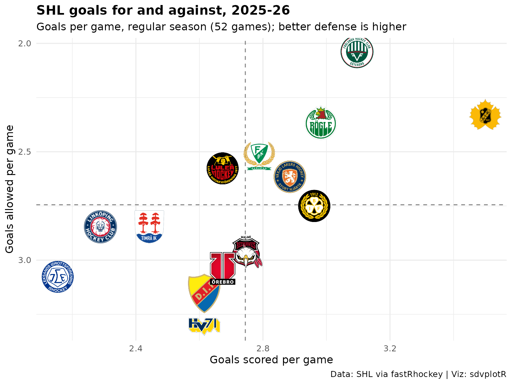
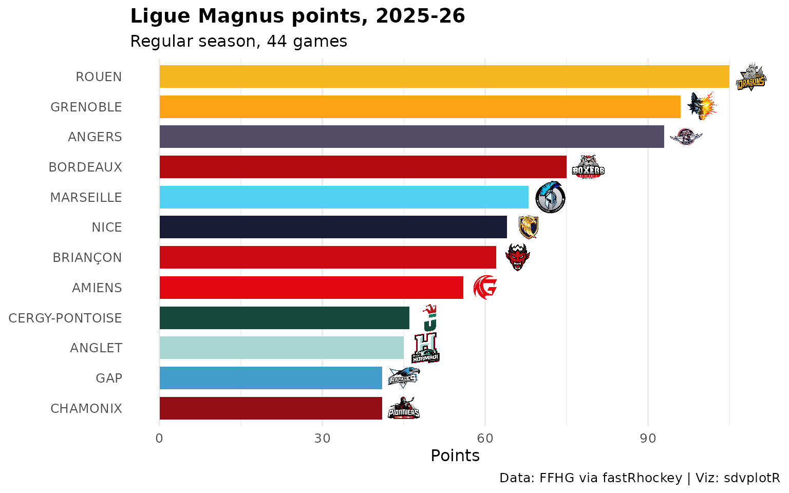

European Hockey Visualizations
Saiem Gilani


Source: vignettes/euro-hockey-viz.Rmd
euro-hockey-viz.RmdOn this page
Three charts and a table from two European hockey leagues’ 2025-26 seasons:
- the SHL’s final table, built from every regular-season game;
- the SHL’s points race;
- the SHL’s goals for against goals against;
- the Ligue Magnus table in team colors.
The data comes from fastRhockey, which
reads the SHL’s and the French federation’s own data services. The team
codes and ids they return are the ones sdvplotR’s team index keys these
leagues by. Leagues and
Identifiers lists what each league’s team_id is.
Load the season
# every 2025-26 SHL regular-season game
shl_games <- fastRhockey::shl_schedule(season = 2026) |>
filter(state == "post-game") |>
transmute(
date = as.Date(start_date_time),
home = home_team_names_code, away = away_team_names_code,
home_name = home_team_names_long, away_name = away_team_names_long,
home_score = home_team_score, away_score = away_team_score, overtime, shootout
)
# the final 2025-26 Ligue Magnus regular-season table (phase 560)
magnus <- fastRhockey::magnus_standings(phase_id = 560) |>
select(rank, team_id, team, games_played, wins, ot_wins, ot_losses, losses, points, goals_for, goals_against)These calls are read from a snapshot taken on November 26, 2026
(fastRhockey 1.1.0), because the leagues’ data services are not called
when this site is built. data-raw/article_fixtures.R takes
it with the same code.
The SHL codes in the schedule (FHC, SKE,
ÖRE) are the index’s team_ids, and so are the
Ligue Magnus team ids. sdv_resolve() confirms that every
one is in the index (TRUE for both leagues):
magnus <- mutate(magnus, team_id = as.character(team_id))
shl_teams <- sort(unique(c(shl_games$home, shl_games$away)))
c(
shl = !anyNA(sdv_resolve(shl_teams, "shl", id_system = "team_id")),
magnus = !anyNA(sdv_resolve(magnus$team_id, "magnus", id_system = "team_id"))
)
#> shl magnus
#> TRUE TRUE
caption_shl <- "Data: SHL via fastRhockey | Viz: sdvplotR"
caption_magnus <- "Data: FFHG via fastRhockey | Viz: sdvplotR"Build the SHL table from the games
The SHL gives three points for a win in regulation, two for a win in overtime or a shootout, and one for a loss in overtime or a shootout. One row per team per game, then a sum:
team_games <- bind_rows(
transmute(shl_games, date, team = home, name = home_name, gf = home_score, ga = away_score, overtime, shootout),
transmute(shl_games, date, team = away, name = away_name, gf = away_score, ga = home_score, overtime, shootout)
) |>
mutate(
extra = overtime | shootout,
pts = case_when(gf > ga & !extra ~ 3, gf > ga ~ 2, extra ~ 1, TRUE ~ 0)
)
shl <- team_games |>
group_by(team, name) |>
summarise(
gp = n(), w = sum(gf > ga & !extra), otw = sum(gf > ga & extra),
otl = sum(gf < ga & extra), l = sum(gf < ga & !extra),
pts = sum(pts), gf = sum(gf), ga = sum(ga),
.groups = "drop"
) |>
mutate(diff = gf - ga) |>
arrange(desc(pts), desc(diff)) |>
mutate(rank = row_number())
stopifnot(nrow(shl) == 14, all(shl$gp == 52))1. The SHL’s final table
A gt table with gt_sdv_logos() for the logos, and
gt_cutline() under sixth place (straight to the
quarterfinals) and tenth place (the last place in the
eighth-finals).
shl |>
mutate(logo = team) |>
select(rank, logo, name, gp, w, otw, otl, l, pts, gf, ga, diff) |>
gt() |>
gt_sdv_logos(columns = "logo", league = "shl", height = 24) |>
cols_align(align = "left", columns = name) |>
cols_label(
rank = "", logo = "", name = "Team", gp = "GP", w = "W", otw = "OTW", otl = "OTL",
l = "L", pts = "PTS", gf = "GF", ga = "GA", diff = "DIFF"
) |>
tab_header(
title = "SHL standings, 2025-26",
subtitle = "Final regular season, built from all 364 games"
) |>
tab_source_note(caption_shl) |>
gt_theme_athletic() |>
gt_cutline(after = 6) |>
gt_cutline(after = 10)| SHL standings, 2025-26 | |||||||||||
| Final regular season, built from all 364 games | |||||||||||
| Team | GP | W | OTW | OTL | L | PTS | GF | GA | DIFF | ||
|---|---|---|---|---|---|---|---|---|---|---|---|
| 1 |  |
Skellefteå AIK | 52 | 30 | 6 | 6 | 10 | 108 | 182 | 121 | 61 |
| 2 |  |
Frölunda HC | 52 | 30 | 4 | 3 | 15 | 101 | 161 | 106 | 55 |
| 3 |  |
Växjö Lakers | 52 | 26 | 6 | 4 | 16 | 94 | 150 | 136 | 14 |
| 4 |  |
Rögle BK | 52 | 25 | 5 | 8 | 14 | 93 | 155 | 123 | 32 |
| 5 |  |
Färjestad BK | 52 | 21 | 6 | 5 | 20 | 80 | 145 | 131 | 14 |
| 6 |  |
Brynäs IF | 52 | 19 | 8 | 5 | 20 | 78 | 154 | 143 | 11 |
| 7 |  |
Luleå Hockey | 52 | 21 | 5 | 4 | 22 | 77 | 139 | 134 | 5 |
| 8 |  |
Malmö Redhawks | 52 | 21 | 6 | 2 | 23 | 77 | 143 | 154 | -11 |
| 9 |  |
Djurgårdens IF | 52 | 20 | 5 | 3 | 24 | 73 | 136 | 164 | -28 |
| 10 |  |
Örebro Hockey | 52 | 17 | 4 | 7 | 24 | 66 | 139 | 158 | -19 |
| 11 |  |
Linköping HC | 52 | 17 | 4 | 5 | 26 | 64 | 119 | 148 | -29 |
| 12 |  |
Timrå IK | 52 | 17 | 4 | 4 | 27 | 63 | 127 | 148 | -21 |
| 13 |  |
HV71 | 52 | 15 | 4 | 6 | 27 | 59 | 136 | 172 | -36 |
| 14 |  |
Leksands IF | 52 | 16 | 2 | 7 | 27 | 59 | 112 | 160 | -48 |
| Data: SHL via fastRhockey | Viz: sdvplotR | |||||||||||
2. The points race
Each team’s points through the season, in its team color from
scale_color_sdv(). The logos stand past the last game at
each team’s final points, in three columns so close finishers do not
cover each other.
race <- team_games |>
arrange(team, date) |>
group_by(team) |>
mutate(game = row_number(), points = cumsum(pts)) |>
ungroup()
# logos rotate through three columns past the last game, so close finishers do not cover each other
ends <- race |>
filter(game == max(game)) |>
arrange(desc(points)) |>
mutate(x = max(game) + c(2.5, 6.5, 10.5)[(row_number() - 1) %% 3 + 1])
# the colour aesthetic goes on the lines only: geom_sdv_logos() would tint the logos with it
ggplot(race, aes(game, points)) +
geom_line(aes(colour = team), linewidth = 0.8, alpha = 0.85) +
geom_sdv_logos(aes(x = x, y = points, team = team), data = ends, league = "shl", width = 0.035) +
scale_color_sdv(league = "shl") +
scale_x_continuous(breaks = seq(0, 52, 13), limits = c(1, 64)) +
labs(
title = "The SHL points race, 2025-26",
subtitle = "Cumulative points, 3 for a regulation win, 2 for an overtime or shootout win, 1 for an overtime or shootout loss",
x = "Game",
y = "Points",
caption = caption_shl
) +
theme_minimal(base_size = 12) +
theme(
legend.position = "none",
panel.grid.minor = element_blank(),
plot.title = element_text(face = "bold")
)
3. Goals for and against
Goals per game for and against, with each team’s logo and the league
averages from geom_mean_lines(). The y axis is reversed, so
the best teams sit top right.
shl_rates <- mutate(shl, gf_pg = gf / gp, ga_pg = ga / gp)
ggplot(shl_rates, aes(gf_pg, ga_pg)) +
geom_mean_lines(aes(x0 = gf_pg, y0 = ga_pg), colour = "grey50", linetype = "dashed") +
geom_sdv_logos(aes(team = team), league = "shl", width = 0.07) +
scale_y_reverse() +
labs(
title = "SHL goals for and against, 2025-26",
subtitle = "Goals per game, regular season (52 games); better defense is higher",
x = "Goals scored per game",
y = "Goals allowed per game",
caption = caption_shl
) +
theme_minimal(base_size = 12) +
theme(plot.title = element_text(face = "bold"))
4. Ligue Magnus points in team colors
The French league’s final table as bars in each team’s color, with its logo at the end of the bar.
magnus_pts <- magnus |>
arrange(points) |>
mutate(team_id = factor(team_id, levels = team_id))
ggplot(magnus_pts, aes(points, team_id)) +
geom_col(aes(fill = team_id), width = 0.75) +
geom_sdv_logos(aes(x = points + 4, team = team_id), league = "magnus", width = 0.05) +
scale_fill_sdv(league = "magnus") +
scale_y_discrete(labels = setNames(magnus_pts$team, magnus_pts$team_id)) +
labs(
title = "Ligue Magnus points, 2025-26",
subtitle = "Regular season, 44 games",
x = "Points",
y = NULL,
caption = caption_magnus
) +
theme_minimal(base_size = 12) +
theme(
legend.position = "none",
panel.grid.major.y = element_blank(),
plot.title = element_text(face = "bold")
)
More leagues
fastRhockey also reads HockeyAllsvenskan (ha_*()) and
the Czech Extraliga (elh_*()). Their logos are in the index
as "ha" and "elh". Three HockeyAllsvenskan
clubs’ codes in ha_standings() (MORA,
NVIF, ÖIK) differ from the index’s
(MIK, NYB, OSIK), so map those
three before plotting, until the index carries both codes.
Related SportsDataverse packages
- sdvplot - the Python plotting package
- sdvplot-js - the JavaScript / TypeScript plotting packages
- cfbfastR - college football
- hoopR - men’s basketball
- wehoop - women’s basketball
- baseballr - baseball
- fastRhockey - hockey
- oddsapiR - betting odds
- sportyR - playing surfaces
- sportsdataverse-py - the Python package
- sportsdataverse-R - the R meta-package